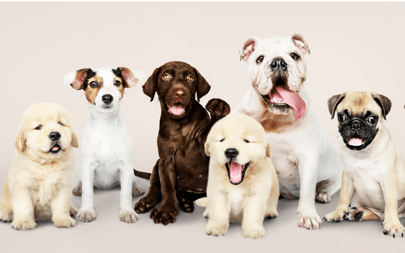
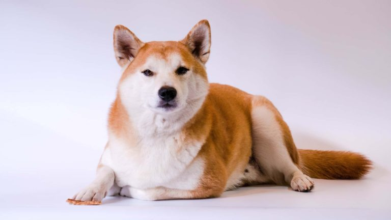
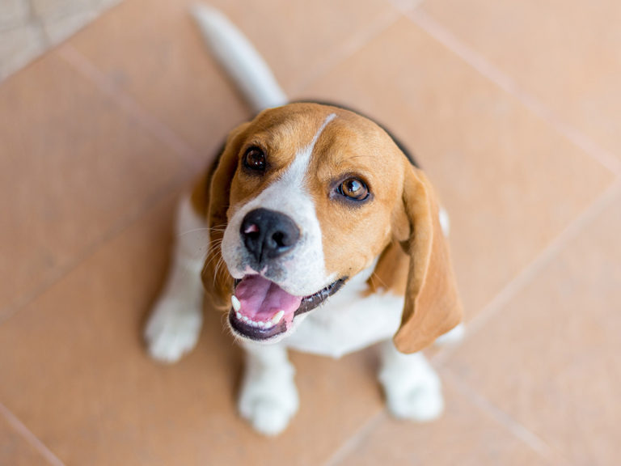
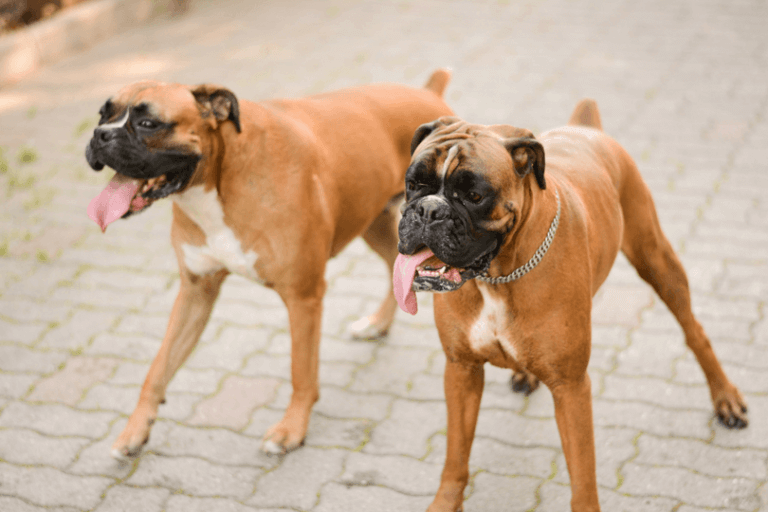
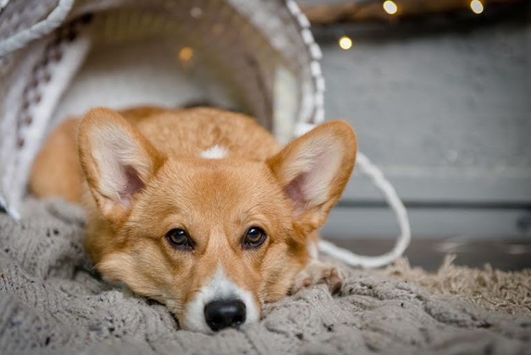

RAÇAS DE CACHORRO: GUIA COMPLETO
A grande diversidade de raças de cachorro que existe hoje é resultado de cruzamentos feitos pelo homem. Muitas delas foram criadas na busca por cachorros
que correspondessem a características físicas específicas e com uma personalidade adequada à função que deveriam desempenhar. Ao longo de 100 mil anos,
quando surgiu o cachorro, descendente do lobo cinzento, as cruzas resultaram em mais de 400 raças de cachorro. Aqui você encontra um guia completo com
as principais raças de cachorro.
- Akita

- O Akita Inu é um dos cachorros mais antigos da história. Originária do Japão, a raça surgiu cerca de 3000 anos atrás.
Alguns criadores acreditam que muitos de seus exemplares já existiam antes na Europa e, posteriormente, tiveram sua genética
aprimorada pela nação oriental. Os Akitas são grandes, imponentes, independentes e protetores. Eles comumente são usados como
cães de guarda devido a essas características. Na maioria das vezes, são cachorros bastante silenciosos, que latem apenas em
último caso ou quando algo chama muito a sua atenção. Hoje podemos ver vários Akitas trabalhando como cães policiais no Japão
justamente pelo seu comportamento e forma de lidar com as mais variadas situações. Há quem acredite que o akita seja descendente
direto dos cães spitz. Seu tamanho, porém, é bem diferente do deles, se destacando por muito tempo como um cachorro de caça.
Era comum que eles caçassem ursos e outros animais grandes na província de Akita, ilha que deu origem ao seu nome.
- Beagle

- Cachorros da raça Beagle são conhecidos por serem muito alegres e brincalhões. Sua principal característica é a paixão por
farejar, especialmente comida! São muito curiosos e adoram botar o focinho no chão e sair à procura de novas descobertas
(e provavelmente querer comer essas descobertas também). Sua origem, no entanto, é meio incerta. Existem comprovações de que a
raça ganhou notoriedade na Inglaterra, onde era muito popular entre os nobres. No entanto, alguns registros mostram cães muito
parecidos com os Beagles datados de 400a.c na região da Grécia. De qualquer forma, foi no Reino Unido que a raça conquistou os
corações de todos. Eles apareciam em variados tamanhos e portes, apesar de apresentarem as mesmas características físicas.
A Rainha Elizabeth I (1533 – 1603) tinha como companheiro um mini Beagle, com apenas nove centímetros de altura. No começo do
século XIX, os criadores de cães começaram a padronizar seus exemplares, mas os Beagles que conhecemos hoje não são muito diferentes
dos primeiros cachorros de milhares de anos atrás. O American Kennel Club foi fundado em 1884 e pouco tempo depois, em 1885 o Beagle
já foi oficialmente registrado como uma raça pura.
- Boxer

- Eles são grandes, brincalhões, agitados e muito inteligentes! Os Boxers podem assustar, logo de cara, por conta do seu tamanho
e sua carinha um pouco enrugada, mas ao contrário do que muitos imaginam, eles são bastante carinhosos e amigos de toda a família.
Originalmente, eles foram criados para desempenhar o papel de cão de guarda de médio porte, mas hoje se destacam muito como cães de
companhia. O Boxer é um cão grande e musculoso que se destaca por sua docilidade e tolerância. Os Boxers gostam muito de brincar e
na maioria das vezes, esquecem do seu tamanho se tornando desajeitados, simpáticos e super engraçados.
- Corgi

- Conhecido no mundo inteiro como o “cão da rainha”, o Pembroke Welsh Corgi chama a atenção por suas orelhas bem compridas e
seu rabo quase que ausente. Curioso e forte, este cãozinho de patas curtas costuma ser destemido e bastante ativo, com um latido
surpreendente. Criado para pastorear gados no século XI, o corgi ganhou popularidade por ser a raça favorita da Rainha Elizabeth II,
quem até hoje frequentemente aparece acompanhada de pelo menos um exemplar da raça.